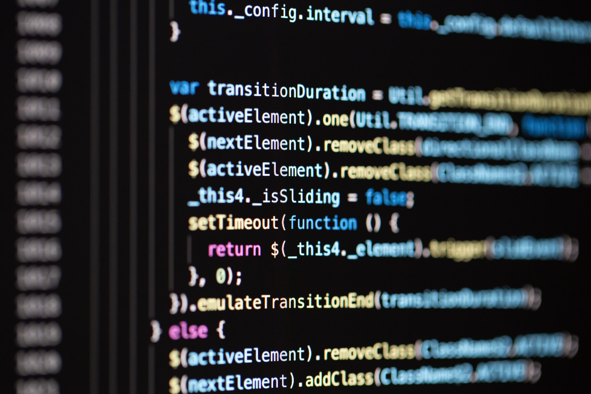

Biodata

I am a freshgraduate informatics engineering student with an interest in the field of front end, web developer. I have organizational skills and can work in a team or alone. Likes challenges and learning new languages in
programming.
Keahlian

Saya memiliki keahlian yang kuat dalam menulis dan menyusun resume biografi yang menarik. Saya telah menyusun resume biografi untuk berbagai jenis pekerjaan dan industri, dan telah mengadaptasi format dan konten untuk
mencerminkan keahlian dan kualifikasi peserta didik. Saya memiliki pengalaman menulis resume biografi yang menarik dan memberikan gambaran yang akurat tentang pengalaman, keahlian, dan tujuan-tujuan karier. Saya juga memiliki
keahlian dalam membuat gambar dan infografis kreatif untuk membantu membuat resume biografi yang mengesankan.